This paper provides a brief introduction to graphical methods that are useful for understanding the pattern of association among categorical variables. These methods can be helpful both for data exploration and for communicating results to others. The methods described include association plots for two-way tables, mosaic displays for multiway tables, correspondence analysis and effect plots for logit models.
Table 1: Hair-color eye-color data Hair Color Eye Color BLACK BROWN RED BLOND | Total | Brown 68 119 26 7 | 220 Blue 20 84 17 94 | 215 Hazel 15 54 14 10 | 93 Green 5 29 14 16 | 64 --------------------------------------------+------ Total 108 286 71 127 | 592
For any two-way table, the expected frequencies under independence can be represented by rectangles whose widths are proportional to the total frequency in each column, f sub +j, and whose heights are proportional to the total frequency in each row, f sub i+; the area of each rectangle is then proportional to e sub ij. Figure 1 shows the expected frequencies for the hair and eye color data.
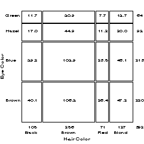
Riedwyl and Schupbach (1983, 1994) proposed a sieve diagram (later called a parquet diagram ) based on this principle. In this display the area of each rectangle is proportional to expected frequency and observed frequency is shown by the number of squares in each rectangle. Hence, the difference between observed and expected frequency appears as the density of shading, using color to indicate whether the deviation from independence is positive or negative. (In monochrome versions, positive deviations are shown by solid lines, negative by broken lines.) The sieve diagram for hair color and eye color is shown in Figure 2.
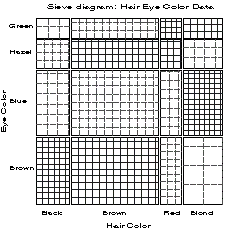
For a two-way contingency table, the signed contribution to Pearson chi sup 2 for cell i, j is d sub ij = ( f sub ij - e sub ij ) / sqrt e sub ij , so that chi sup 2 = Sigma Sigma sub ij d sub ij sup 2. In the association plot , each cell is shown by a rectangle that has (signed) height &prop d sub ij and width proportional to sqrt e sub ij. The area of each rectangle is therefore proportional to f sub ij - e sub ij. The rectangles for each row in the table are positioned relative to a baseline representing independence (d sub ij = 0) shown by a dotted line. Cells with observed > expected frequency rise above the line (and are colored black); cells that contain less than the expected frequency fall below it (and are shaded red). Figure 3 shows the association plot for the hair-eye color data.
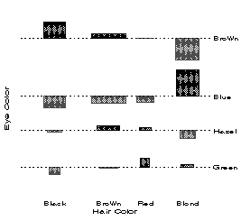
Figure 4 shows aggregate data on applicants to graduate school at Berkeley for the six largest departments in 1973 classified by admission and gender. At issue is whether the data show evidence of sex bias in admission practices (Bickel et al., 1975). The figure shows the cell frequencies numerically, but margins for both sex and admission are equated in the display. For these data the sample odds ratio, Odds (Admit|Male) / (Admit|Female) is 1.84 indicating that males are almost twice as likely in this sample to be admitted. The four-fold display shows this imbalance clearly.
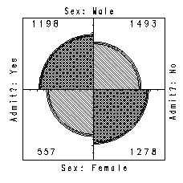
One form of this plot, called the condensed mosaic display , is similar to a divided bar chart. The width of each column of tiles in Figure 5 is proportional to the marginal frequency of hair colors. Again, the area of each box is proportional to the cell frequency, and complete independence is shown when the tiles in each row all have the same height.
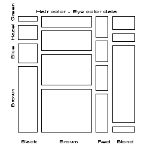
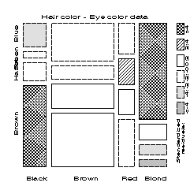
Figure 6: Enhanced mosaic, reordered and shadedThe condensed form of the mosaic plot generalizes readily to the display of multi-dimensional contingency tables. Imagine that each cell of the two-way table for hair and eye color is further classified by one or more additional variables--sex and level of education, for example. Then each rectangle can be subdivided horizontally to show the proportion of males and females in that cell, and each of those horizontal portions can be subdivided vertically to show the proportions of people at each educational level in the hair-eye-sex group.
for all i , j , k in a three-way table. This corresponds to the log-linear model [A] [B] [C]. Fitting this model puts all higher terms, and hence all association among the variables, into the residuals.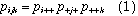
This corresponds to the log-linear model [ A B ] [ C ]. Residuals from this model show the extent to which variable C is related to the combinations of variables A and B but they do not show any association between A and B.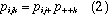
For example, with the data from Table 1 broken down by sex, fitting the model [HairEye][Sex] allows us to see the extent to which the joint distribution of hair-color and eye-color is associated with sex. For this model, the likelihood-ratio G sup 2 is 29.35 on 15 df (p = .015), indicating some lack of fit. The three-way mosaic, shown in Figure 7, highlights two cells: males are underrepresented among people with brown hair and brown eyes, and overrepresented among people with brown hair and blue eyes. Females in these cells have the opposite patterns, with residuals just shy of +- 2. The d sub ij sup 2 for these four cells account for 15.3 of the chi sup 2 for the model [HairEye] [Sex]. Hence, except for these cells hair color and eye color appear unassociated with sex.
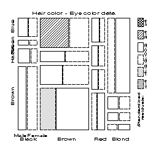
For a three-way table, the the hypothesis of complete independence, H sub { A otimes B otimes C } can be expressed as
where H sub { A otimes B } denotes the hypothesis that A and B are independent in the marginal subtable formed by collapsing over variable C, and H sub { AB otimes C } denotes the hypothesis of joint independence of C from the AB combinations. When expected frequencies under each hypothesis are estimated by maximum likelihood, the likelihood ratio G ²s are additive: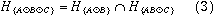
For example, for the hair-eye data, the mosaic displays for the [Hair] [Eye] marginal table and the [HairEye] [Sex] table can be viewed as representing the partition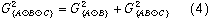
Model df G2 [Hair] [Eye] 9 146.44 [Hair, Eye] [Sex] 15 29.35 ------------------------------------------ [Hair] [Eye] [Sex] 24 179.79
This partitioning scheme extends readily to higher-way tables.
For a two-way table the scores for the row categories, namely x sub im, and column categories, y sub jm, on dimension m = 1, ... , M are derived from a singular value decomposition of residuals from independence, expressed as d sub ij / sqrt n, to account for the largest proportion of the chi sup 2 in a small number of dimensions.
Thus, correspondence analysis is designed to show how the data deviate from expectation when the row and column variables are independent, as in the association plot and mosaic display. The association plot and mosaic display depict every cell in the table, however, and for large tables it may be difficult to see patterns. Correspondence analysis shows only row and column categories in the two (or three) dimensions which account for the greatest proportion of deviation from independence.
In SAS Version 6, correspondence analysis is performed using PROC CORRESP in SAS/STAT. An OUT= data set from PROC CORRESP contains the row and column coordinates, which can be plotted with PROC PLOT or PROC GPLOT. The program below reads the hair and eye color data into the data set COLORS, and calls the CORRESP procedure.
data colors;
input BLACK BROWN RED BLOND EYE $;
cards;
68 119 26 7 Brown
20 84 17 94 Blue
15 54 14 10 Hazel
5 29 14 16 Green
;
proc corresp data=colors out=coord short;
var BLACK BROWN RED BLOND;
id eye;
The printed output from the CORRESP procedure indicates that over 98% of the chi sup 2 for association is accounted for by two dimensions, with most of that attributed to the first dimension. A plot of the row and column points, shown in Figure 8, can be constructed from the OUT= data set COORD requested in the PROC CORRESP step. The plot shows that both hair color and eye color vary from dark to light across Dimension 1, confirming the impression from the mosaic display. Dimension 2 reflects an independent association of red hair and green eyes. In fact, in the mosaic display we use scores on the first (largest) dimension to reorder the categories of variables in order to display the pattern of association most clearly.
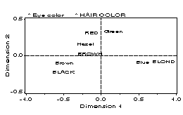
The log-linear model treats the variables symmetrically: none of the variables is distinguished as a response variable. However, the association parameters may be difficult to interpret, and the absence of a dependent variable makes it awkward to plot results in terms of the log-linear model. In this case, correspondence analysis and the mosaic display provide a simpler way to display the patterns of association in a contingency table.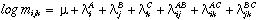
On the other hand, if one variable can be regarded as a response variable then the effects of the other, independent variables may be expressed as a logit model. For example, if variable C is a binary response, then the log-linear model can be expressed as an equivalent logit model,
where alpha = 2 lambda sub 1 sup C, beta sub i sup A = 2 lambda sub i1 sup AC, and beta sub j sup B = 2 lambda sub j1 sup BC, because all lambda terms sum to zero.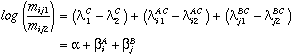
Both log-linear and logit models can be fit using PROC CATMOD in SAS. For logit models, plots of observed and predicted logits provide an effective way to interpret a fitted model, and are easily constructed from an output data set produced by CATMOD. Fox (1987) describes general methods for constructing these plots for generalized linear models; see Friendly and Fox (1992) for further examples and comparisons of these plots with mosaic displays.
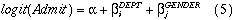
Model (5) is fit using the statements below. The RESPONSE statement is used to produce an output data set, PREDICT, for plotting.
data berkeley;
do dept = 'A','B','C','D','E','F';
do gender = 'Male ', 'Female';
do admit = 'Admit', 'Reject';
input freq @@;
output;
end; end; end;
cards;
512 313 89 19
353 207 17 8
120 205 202 391
138 279 131 244
53 138 94 299
22 351 24 317
;
proc catmod order=data data=berkeley;
weight freq;
response / out=predict;
model admit = dept gender / ml noiter;
The results of the PROC CATMOD step show a strong effect of Department, but none of Gender and a significant lack of fit.
MAXIMUM-LIKELIHOOD ANALYSIS-OF-VARIANCE TABLE Source DF Chi-Square Prob ------------------------------------------------- INTERCEPT 1 262.49 0.0000 GENDER 1 1.53 0.2167 DEPT 5 534.78 0.0000 LIKELIHOOD RATIO 5 20.20 0.0011
To interpret these results we plot the observed and predicted values for each Dept-Gender group. The response variable has a simple, additive form (5) on the logit scale (log odds), but is easier to understand on the probability scale. One compromise is to plot results on the logit scale, adding a second scale showing probability values. The data set PREDICT contains observed (_OBS_) and predicted (_PRED_) values, and estimated standard errors (_SEPRED_) on both scales. The logit values have _TYPE_ = 'FUNCTION'.
DEPT GENDER ADMIT _TYPE_ _OBS_ _PRED_ _SEPRED_ A Male FUNCTION 0.492 0.582 0.069 A Male Admit PROB 0.621 0.642 0.016 A Male Rejec PROB 0.379 0.358 0.016 A Female FUNCTION 1.544 0.682 0.099 A Female Admit PROB 0.824 0.664 0.022 A Female Rejec PROB 0.176 0.336 0.022 ...To plot the fitted logits, select the _TYPE_ = 'FUNCTION' observations in a data step:
data predict; set predict; if _type_ = 'FUNCTION';A simple plot of predicted logits can then be obtained as a plot of _pred_ * dept = gender in a PROC GPLOT step. The plot displayed in Figure 9 uses the Annotate facility to add 95% confidence limits, calculated as
_pred_ +- 1.96 _sepred_,
and a probability scale at the right.
These steps
are combined in a macro program, CATPLOT, used as follows:
%catplot(data=predict, class=gender, xc=dept,
z=1.96, anno=pscale)
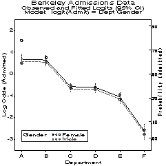
Figure 9: Effects of Gender and Department on AdmissionThe effects shown in Figure 9 for each department contradict the apparent gender bias shown in the aggregate data; in fact, the predicted odds of admission is slightly higher for females than males. The resolution of this contradiction (an example of Simpson's paradox) can be found in the large differences in admission rates among departments. Men and women apply to different departments differentially, and in these data women apply in larger numbers to departments that have a low acceptance rate. The aggregate results are misleading because they falsely assume men and women are equally likely to apply in each field. (This explanation ignores the possibility of structural bias against women, e.g., lack of resources allocated to departments that attract women applicants.)
These effects may all be seen in Figure 10, a mosaic display of the data showing observed frequencies and residuals from the log-linear model [AdmitDept] [GenderDept] which asserts that admission and gender are conditionally independent, given department (equivalent to logit (Admit) = alpha + beta sub i sup DEPT). The four large blocks corresponding to admission by gender show the greater overall acceptance of males than females. Among admitted applicants, however, there are larger proportions of women in the departments (C-F) with low admission rates. The lack of fit of model [AD] [GD] is concentrated entirely in Department A, where a greater proportion of females is admitted.
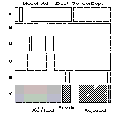